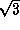

glutSolidDodecahedron and glutWireDodecahedron render a solid or wireframe dodecahedron (12-sided regular solid) respectively.
Usage
void glutSolidDodecahedron(void); void glutWireDodecahedron(void);
Description
glutSolidDodecahedron and glutWireDodecahedron render a solid or wireframe dodecahedron respectively centered at the modeling coordinates origin with a radius of .